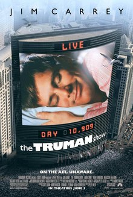
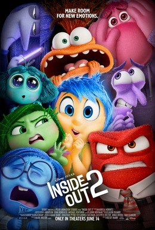
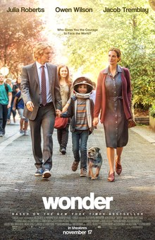
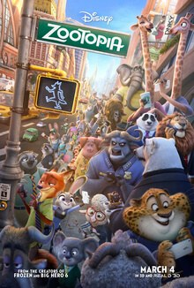
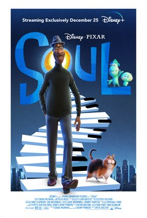
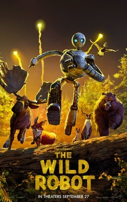
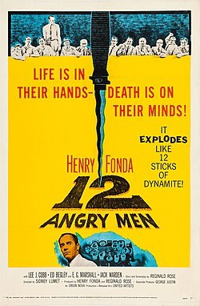

MODERATÖR KİTAPÇIĞI Kolaylaştırıcı için beş kural Felsefe Makinesi yöntemiyle · kamp boyunca geçerli | KURALLAR |
Felsefe atölyesinde sen öğretmen değilsin, meraklı bir kolaylaştırıcısın. Çocuklar felsefe öğrenmeye değil, felsefe yapmaya geliyor. s. 22, 31
Kampın küçük alışkanlıkları
MODERATÖR KİTAPÇIĞI Kamp omurgası Kamp sorusu: İyi bir hayat nedir? | OMURGA |
Kamp sorusu: İyi bir hayat nedir?
Yolculuk: Her gün, çocukların ilk gün sık verdiği bir cevabı sınar ve karmaşıklaştırır. Her gün bir öncekinin açık bıraktığı soruyu devralır.
| Gün | Film | Sınanan ilk cevap | Günün Açık Sorusu | Açık kalan soru (ertesi güne) |
|---|---|---|---|---|
| 1 | The Truman Show | “Mutlu olmak.” | Bilmek nedir? | Kendimizi biliyor muyuz? |
| 2 | Ters Yüz 2 | “Kendin olmak.” | “Kendin ol” ne demek, eğer “ben” sürekli değişiyorsa? | Başkaları benim iyi hayatımın neresinde? |
| 3 | Mucize (Wonder) | “İyi biri olmak, sevilmek.” | İyi bir insan olmak ile iyi bir hayat yaşamak aynı şey mi? | Bir grup birine haksızlık ederse? |
| 4 | Zootropolis | “Herkesin eşit olması.” | Adil olmak herkese aynı davranmak mı? | Hepsi olsa bile hayatı yaşamaya değer kılan ne? |
| 5 | Soul | “Hayallerine ulaşmak.” | Hayatı yaşamaya değer kılan bir amaca ulaşmak mı, yaşamanın kendisi mi? | Sentez: herkesin kendi büyük sorusu |
A noktasından B noktasına:
| A: Kampa böyle gelir | B: Kamptan böyle ayrılır |
|---|---|
| Felsefe uzak ve zor. | Sıradan şeylerin altında da büyük bir soru var. |
| Her sorunun bir doğru cevabı var. | Bazı cevaplar daha iyi gerekçelendirilmiş. |
| “Bence öyle.” | “Bence …, çünkü …” ve “Elif'in dediğine katılmıyorum, çünkü …” |
| Fikri değişmez ya da sessizce değişir. | Fikrini açıkça değiştirir ve nedenini söyler. |
| Kamp sorusuna gerekçesiz bir liste. | En az bir gerilimi adlandıran gerekçeli cevap ve kendi büyük sorusu. |
Günün şekli: izleme görevi (film boyunca demir) · üç durak, her birinde tek Açık Soru · 60 dakika tartışma: 0–5 Kavrama Zamanı · 5–12 soruların altındaki soru · 12–42 soru merdiveni · 42–50 kapanış ikilemi · 50–55 kamp sorusuna dönüş · 55–60 gün yaprağı. 5. gün: merdiven, Beş Kapı ve Varış.
İyi bir felsefi sorunun dört testi (çocuklara da söylenir): akıllı insanlar farklı cevap verebilir · cevabı “çünkü” ister · filmin dışına taşar · cevabı yeni bir soru doğurur.
Tahtada asılı kalsın: “Katılıyorum, çünkü…” · “Katılmıyorum, çünkü…” · “…'nın söylediğine eklemek istiyorum…” · “Fikrimi değiştirdim, çünkü…” · “Bir örnek vereyim…”
Parantez kuralı: Filmden geçen yer, kişi ve kavramların yanında kısa bir hatırlatma parantezi var. Çocuklara okurken parantezi atlayabilirsin.
Görünür yolculuk: Düşünce Yolculuğum dosyası (Başlangıç, gün yaprakları, Varış) ve Yolculuk Duvarı (ortada kamp sorusu, her gün kartında “Bugün eklediğimiz parça”, “Açık kalan soru”, “Hayattan yakaladığımız soru”).
MODERATÖR KİTAPÇIĞI · 1. GÜN The Truman Show Bilgi · Kamp sorusu: İyi bir hayat nedir? | 1/5 · GÜN VE AKIŞ |
Bugün ne oluyor? Kampın ilk günü. Herkes kamp sorusuna ilk cevabını yazsın ve “Bunu nereden biliyorum?” diye sormanın tadını alsın.
|  |
Günün akışı (yaklaşık 3 sa 41 dk)
| Saat | Ne yapıyoruz | Süre |
|---|---|---|
| 0:00 | Hoş geldiniz ve dört kural | 5 dk |
| 0:05 | Başlangıç yaprağı: ilk cevap ve beş cümle | 12 dk |
| 0:17 | The Present ve “soruların altındaki soru” | 7 dk |
| 0:24 | İzleme görevi tahtaya | 3 dk |
| 0:27 | Film, üç durakla | 103 + 18 dk |
| 2:28 | Ara ve “Christof der ki” | 10 dk |
| 2:38 | Tartışma | 60 dk |
| 3:38 | Köprü ve hayattan soru görevi | 3 dk |
“Film boyunca tek bir soruyu aklınızda tutun: Truman neyi biliyor, neye sadece inanıyor? Film bitince ne düşüneceksiniz, bakalım.”
Demir atmak · s. 48 Sandalye'deki açılış · s. 65 Soru film boyunca tahtada kalır, her durakta ona dönülür.
MODERATÖR KİTAPÇIĞI · 1. GÜN The Truman Show Bilgi · Kamp sorusu: İyi bir hayat nedir? | 2/5 · 1. VE 2. DURAK |
Sahne: Truman bodrumda, karısından gizli, dergi kupürlerinden Sylvia'nın (Truman'a her şeyin bir oyun olduğunu anlatmaya çalışan, sonra götürülen kız) yüzünü birleştirmeye çalışıyor. Bu bölüm bitince durdur. Koşul: Kanıt yok, ama bir sezgi var.
Açık Soru: “Truman'ın elinde hiçbir kanıt yok, ama bir şeylerin eksik olduğunu seziyor. Bir şeyi sezmek, onu bilmek midir?” Ardından: “Nedenini söyleyebilir misin?” Kapalı uçlu soruyu açmak · s. 59
Gizli Sorular: “Eğer Truman'ın sezgisi yanlış çıksaydı, yine de bir şey bilmiş olur muydu?” Eğer durum böyle olsaydı · s. 52 · “Bir şeyi bilmek için ne gerekli? Sezmek yeter mi?” Ne gerekli? Ne yeterli? · s. 51
Tartışmada geri çağır: 2. basamak (rüya).
Sahne: Gece bir iskelede Marlon (Truman'ın çocukluk arkadaşı; aslında şovda rol yapan bir oyuncu), Truman'a asla yalan söylemeyeceğini söylüyor. Biz bu cümleyi Christof'un (şovun yaratıcısı; Truman'ın hayatını yöneten yapımcı) ona söylettiğini görüyoruz. Babasıyla kucaklaşma sahnesi bitince durdur. Koşul: Bilginin tek dayanağı başkasının sözü.
Açık Soru: “Truman'ın elinde Marlon'un sözünden başka kanıt yok. Ama sen de kendi doğum gününü, Dünya'nın yuvarlak olduğunu başkalarının sözünden biliyorsun. Birinin sözüne dayanarak bildiğimiz bir şey gerçekten bilgi midir, yoksa sadece bir güven mi?” Açık Soru · s. 34 Çoktan seçmeli · s. 55
Gizli Sorular:
Zaman kalırsa: “Sana yalan söyleyen biri yine de gerçek bir arkadaşın olabilir mi?” Eğer şu şekilde düşünseydik · s. 53 Geri çağır: 1. basamak.
MODERATÖR KİTAPÇIĞI · 1. GÜN The Truman Show Bilgi · Kamp sorusu: İyi bir hayat nedir? | 3/5 · 3. DURAK VE TARTIŞMANIN BAŞI |
Sahne: Gece kontrol odasında Christof, dev ekranda uyuyan Truman'ın görüntüsüne elini dokunduruyor. Arama başlayınca durdur. Koşul: Ne bilineceğine başkası karar veriyor.
Isınma: “Bu dokunuş sevgi mi, sahiplik mi, yoksa başka bir şey mi?” Çoktan seçmeli · s. 55, 66
Açık Soru: “Christof, Truman'ın neyi bileceğine kendisi karar veriyor. Birinin senin adına neyi bilmeyeceğine karar vermesi doğru olabilir mi?” Ardından: “Nedenini söyleyebilir misin?” Kapalı uçlu soruyu açmak · s. 59
Gizli Soru: “Eğer Christof haklıysa, yani dışarıdaki dünya gerçekten daha acı doluysa, o zaman?” Destekle ve eleştir · s. 62 Geri çağır: 3. basamak.
Dakikalar yaklaşıktır. Kamptan önce filmi bir kez izle ve duraklarını kendi oynatıcında işaretle.
Film bitince: 60 dakika
Hamleleri cevap veren çocuğa değil, gruba sor: “Buna ne diyeceksiniz?” Ağ dinamiği · s. 44
dk 0–5 · Kavrama Zamanı. “Filmi birlikte anlatalım. Biri başlasın, sonra her biriniz şu ana kadar söylenmemiş bir şey eklesin.” Kavrama Zamanı · s. 35
dk 5–12 · Soruların altındaki soru. Tahtadaki durak satırlarından iki zıt cevabı yan yana koy. Film sorularını insan sorusuna çevir: “Meryl (Truman'ın karısı; aslında şovda rol yapan bir oyuncu) onu seviyor muydu?” sorusu “Birinin bizi sevdiğini nasıl biliriz?” olur. Sonra demir at: “Bütün bunların altındaki soru ne?” Tahtaya tek başına yaz: Bilmek nedir? Karşıtlıkları ortaya çıkarmak · s. 56–57 Demir atmak · s. 48
1. basamak · Bilgi mi, inanç mı? Açık Soru: “Truman otuz yıl ‘Babam denizde boğuldu’ diye biliyordu. Bunu da söylenenlerden biliyordu, tıpkı iskeledeki sözü bildiği gibi. Bu bilgi miydi?”
MODERATÖR KİTAPÇIĞI · 1. GÜN The Truman Show Bilgi · Kamp sorusu: İyi bir hayat nedir? | 4/5 · RÜYA, KAMP SORUSU VE MAKİNE |
2. basamak · Rüya. Geri çağır: “Dergilerden birleştirilen yüzü hatırlıyor musunuz?” Açık Soru: “Eğer şu an rüya görüyor olsaydın, bunu nasıl anlardın?” Eğer durum böyle olsaydı · s. 52–53
3. basamak · Kamp sorusuna köprü. Geri çağır: “Ekrana dokunan eli hatırlıyor musunuz?” Açık Soru: “İyi bir hayat için gerçeği bilmek gerekli mi, yoksa mutlu olmak yeterli mi?” Ne gerekli? Ne yeterli? · s. 51
4. basamak · Deneyim makinesi. Açık Soru: “Eğer seni ömür boyu mutlu edecek bir makine olsaydı ve bağlandıktan sonra makinede olduğunu unutsaydın, bağlanır mıydın?” Ardından: “Nedenini söyleyebilir misin?” Eğer sanatı · s. 27
MODERATÖR KİTAPÇIĞI · 1. GÜN The Truman Show Bilgi · Kamp sorusu: İyi bir hayat nedir? | 5/5 · İKİLEM VE KAPANIŞ |
dk 42–50 · Kapanış ikilemi: deneyim makinesi. Herkes ayağa kalkar ve bir duvar seçer. Ya… ya da… · s. 59
A Makineye bağlanırım. Mutlu ama gerçek olmayan bir hayat.A'dakilere: “Sana hep seni mutlu eden yalanlar söyleyen bir arkadaşın olsun ister misin?” | B Bağlanmam. Gerçek ama zor olabilecek bir hayat.B'dekilere: “Hiç ‘Keşke bilmeseydim’ dediğin bir şey oldu mu?” |
Ortada durmak serbest. Ortadakilere: “Seni ortada tutan ne? A mı, B mi, yoksa başka bir yol mu?” İkili karşıtlıkları çözmek · s. 56 Ters köşe soruları iki tarafa da onlara katılmayan birinin sesiyle sorulur. Hayali muhalif · s. 50 Sonra: “Yer değiştiren var mı? Seni ne ikna etti?” Yerinde kalanlara: “Seni yerinde tutan ne?”
dk 50–55 · Kamp sorusuna dönüş. “Sabah birçoğunuz ‘mutlu olmak’ yazdınız. Bugünden sonra bu cevaba ne eklemek gerekiyor?” Grubun kendi cümlesini ve açık kalan soruyu 1. gün kartına yaz.
dk 55–60 · Gün yaprağı. Sessiz beş dakika.
Köprü (3 dk). “Truman kapıdan (gökyüzü gibi boyanmış stüdyo duvarındaki çıkış kapısı) çıktığında kim olacak? Dışarıdaki dünyayı bilmek zor. Peki kendimizi biliyor muyuz? Yarın içerideki dünyaya bakacağız.” Hayattan soru görevi: “Yarına kadar kampta ‘Bundan gerçekten emin miyim?’ dediğin bir an yakala.”
Takılırsan.
Hassas anlar. Truman'ın babasını denizde kaybettiğini sandığı sahneler ve finaldeki fırtına, yakın zamanda birini kaybetmiş bir çocuğa dokunabilir. Filmden önce kulağına bir cümle söylemen yeter. Rüya ve makine soruları bazen “Ya hiçbir şey gerçek değilse?” kaygısı uyandırır. Öyle olursa: “Bunlar düşünme oyunları. Sevdiklerinizden şüphe etmenizi istemiyoruz.”
Felsefe köşesi (en sonda, tek cümle) s. 65 Rüyada yoğunlaştıysa: “Bu soruyu yaklaşık 400 yıl önce Descartes da sormuş: Rüya görmediğimi nasıl bilirim?” Sözde yoğunlaştıysa: “Yaklaşık 250 yıl önce Hume ‘Başkasının sözüne, deneyimin izin verdiği kadar güven’ demiş, Reid ‘Önce güvenmeseydik hiçbir şey öğrenemezdik’ demiş.”
MODERATÖR KİTAPÇIĞI · 2. GÜN Ters Yüz 2 Benlik · Kamp sorusu: İyi bir hayat nedir? | 1/5 · GÜN VE AKIŞ |
Bugün ne oluyor? Dün dışarıdaki dünyayı sorduk, bugün içerideki dünyaya bakıyoruz. Dünden devralınan soru: “Kendimizi biliyor muyuz?”
|  |
Günün akışı (yaklaşık 3 sa 22 dk)
| Saat | Ne yapıyoruz | Süre |
|---|---|---|
| 0:00 | Dünkü gün kartı ve hayattan sorular | 9 dk |
| 0:09 | Hassas içerik notu | 2 dk |
| 0:11 | İzleme görevi tahtaya | 4 dk |
| 0:15 | Film, üç durakla (son yarım saatte durak yok) | 96 + 18 dk |
| 2:09 | Ara ve “Duygu heykelleri” | 10 dk |
| 2:19 | Tartışma | 60 dk |
| 3:19 | Köprü ve hayattan soru görevi | 3 dk |
Hassas içerik notu (filmden önce): “Filmin sonuna doğru Riley çok yoğun bir kaygı yaşıyor, bir panik atak geçiriyor. Zorlanan olursa dışarı çıkabilir, bana bir işaret etmesi yeter.”
“Film boyunca tek bir soruyu aklınızda tutun: Riley değiştiğinde hâlâ Riley mi? Film bitince ne düşüneceksiniz, bakalım.”
Demir atmak · s. 48 Sandalye'deki açılış · s. 65 Soru film boyunca tahtada kalır, her durakta ona dönülür.
MODERATÖR KİTAPÇIĞI · 2. GÜN Ters Yüz 2 Benlik · Kamp sorusu: İyi bir hayat nedir? | 2/5 · 1. VE 2. DURAK |
Sahne: Kampta işler ters gidince Kaygı (ergenlikle Riley'nin zihnine gelen, hep geleceği planlayan yeni duygu), Riley'nin benlik duygusunu (anılarından büyüyen, “Ben iyi bir insanım” diyen inançlar yapısı) zihnin arkasına fırlatıyor. Neşe ve eski duygular kavanozlara kapatılıp kasaya (Riley'nin bastırdığı şeylerin saklandığı yer) gönderiliyor. Bu bölüm bitince durdur. Koşul: “Ben” denen inançlar sökülüyor.
Açık Soru: “Riley'nin ‘Ben iyi bir insanım’ diyen inançları söküldü, yerine yenileri kurulacak. Bir insanın inançları değişirse, hâlâ aynı kişi midir?” Ardından: “Nedenini söyleyebilir misin?” Kapalı uçlu soruyu açmak · s. 59
Gizli Sorular: “Eğer bir gecede bütün inançların değişseydi, sabah uyanan kim olurdu?” Eğer durum böyle olsaydı · s. 52 · “Senin için öyle bir özellik düşün ki o olmadan artık sen olmazsın.” Sine qua non · s. 62
Tartışmada geri çağır: 1. basamak.
Sahne: Riley, Val'e (Riley'nin hayran olduğu, büyük ve popüler hokey oyuncusu) ve grubuna yakınlaşmak için en yakın arkadaşları Bree ve Grace'ten (başka liseye gidecekleri ortaya çıkan iki yakın arkadaşı) uzaklaşıyor. Ön izlemede Riley'nin ikisini açıkça geride bıraktığı ilk anı seç, o an bitince durdur. Koşul: Başkalarına uymak için değişmek.
Açık Soru: “Riley yeni bir gruba girmek için başka biri gibi davranıyor. Bir insan başka biri gibi davrandığında kendini mi kaybediyor, büyüyor mu, yoksa başka bir şey mi oluyor?” Çoktan seçmeli, “yoksa başka bir şey mi?” · s. 55, 66
Gizli Sorular:
Zaman kalırsa: “Eğer arkadaşlarının yanında başka, ailenin yanında başka konuşuyorsan, ‘gerçek sen’ hangisi?” Eğer şu şekilde düşünseydik · s. 53 Geri çağır: 3. basamak.
MODERATÖR KİTAPÇIĞI · 2. GÜN Ters Yüz 2 Benlik · Kamp sorusu: İyi bir hayat nedir? | 3/5 · 3. DURAK VE TARTIŞMANIN BAŞI |
Sahne: Kaygı'nın yönettiği Riley, gizlice Koç Roberts'ın (kampı yöneten sert antrenör) odasına giriyor ve defterinden henüz takıma hazır görülmediğini öğreniyor. Bu bölüm bitince durdur. Koşul: “Ben”i bir duygu yönetiyor.
Açık Soru: “Riley'yi bu odaya Kaygı soktu. Bir insan bir duygunun etkisiyle bir şey yaptığında, onu kendisi mi yapmış olur?” Ardından: “Nedenini söyleyebilir misin?” Kapalı uçlu soruyu açmak · s. 59
Gizli Sorular: “Eğer bunu Kaygı yaptıysa, o zaman yaptığından Riley sorumlu mu?” Eğer… o zaman · s. 27 · “Çok kızgınken söylediğin bir sözü sen mi söyledin, öfken mi?” Çıkarımları sınamak · s. 58 Geri çağır: 4. basamak.
Dakikalar yaklaşıktır. Kamptan önce filmi bir kez izle ve duraklarını kendi oynatıcında işaretle.
Film bitince: 60 dakika
Hamleleri cevap veren çocuğa değil, gruba sor: “Buna ne diyeceksiniz?” Ağ dinamiği · s. 44
dk 0–5 · His turu ve Kavrama Zamanı. Film duygusal bitti. Önce bir dakika: “Tek kelimeyle, film sana ne hissettirdi?” Pas serbest. Sonra: “Filmi birlikte anlatalım. Biri başlasın, her biriniz şu ana kadar söylenmemiş bir şey eklesin.” Kavrama Zamanı · s. 35
dk 5–12 · Soruların altındaki soru. Tahtadaki durak satırlarından iki zıt cevabı yan yana koy. Film sorularını insan sorusuna çevir: “Riley neden Bree ve Grace'i bıraktı?” sorusu “Yeni bir gruba ait olmak için eskilerini bırakmak ne zaman kendini kaybetmektir?” olur. Sonra demir at: “Bütün bunların altındaki soru ne?” Tahtaya yaz: “Kendin ol” ne demek, eğer “ben” sürekli değişiyorsa? Karşıtlıkları ortaya çıkarmak · s. 56–57 Demir atmak · s. 48
1. basamak · Hangisi gerçek Riley? Açık Soru: “Filmin başında ‘Ben iyi bir insanım’ diyen bir Riley vardı. Kaygı onun yerine ‘Ben yeterince iyi değilim’ diyen bir Riley kurdu. Hangisi gerçek Riley'di, yoksa başka bir şey mi?” Çoktan seçmeli · s. 55
MODERATÖR KİTAPÇIĞI · 2. GÜN Ters Yüz 2 Benlik · Kamp sorusu: İyi bir hayat nedir? | 4/5 · BLOKLAR, KÖPRÜ VE KASA |
2. basamak · Bloklardan ev. Açık Soru: “Eğer bloklardan yaptığın bir evin her gün bir bloğunu değiştirseydin ve bir yıl sonra eski blokların hiçbiri kalmasaydı, o hâlâ aynı ev olur muydu?” Sonra: “On yıl önceki sen ile bugünkü sen aynı kişi misiniz?” Eğer durum böyle olsaydı · s. 52
3. basamak · Kamp sorusuna köprü. Geri çağır: “Val'in grubunu hatırlıyor musunuz?” Açık Soru: “İyi bir hayat için ‘gerçek ben’i bulmak mı gerekli, yoksa kim olacağını seçmek mi?” Ne gerekli? Ne yeterli? · s. 51
4. basamak · Kasadaki Kaygı. Geri çağır: “Koçun defterini hatırlıyor musunuz?” Açık Soru: “Eğer kendi kaygını bir kavanoza kapatıp kasaya kilitleyebilseydin, bir daha hiç kaygılanmasaydın ama geleceğe hazırlanmanı sağlayan ses de sussaydı, kilitler miydin?” Ardından: “Nedenini söyleyebilir misin?” Eğer sanatı · s. 27
MODERATÖR KİTAPÇIĞI · 2. GÜN Ters Yüz 2 Benlik · Kamp sorusu: İyi bir hayat nedir? | 5/5 · İKİLEM VE KAPANIŞ |
dk 42–50 · Kapanış ikilemi: kasadaki Kaygı. Herkes ayağa kalkar ve bir duvar seçer. Ya… ya da… · s. 59
A Kaygı'yı kasaya kilitlerim. Geleceği daha az düşünmek pahasına da olsa.A'dakilere: “Bir daha hiç heyecanlanmayacaksın. Maçtan önce kalbinin hızlanmasını, bir doğum gününü beklemeyi hiç hissetmeyeceksin. Yine de kilitler misin?” | B Kaygı konsolda (duyguların Riley'yi yönettiği pano) kalsın. Kaygıyla yaşarım, geleceğe hazırlanırım.B'dekilere: “Kaygı bazen geceleri uyutmuyor, karnını ağrıtıyor. Hiç ‘Keşke şu an kaygılanmasam’ demedin mi?” |
Ortada durmak serbest. Ortadakilere: “Seni ortada tutan ne? A mı, B mi, yoksa başka bir yol mu?” İkili karşıtlıkları çözmek · s. 56 Ters köşe soruları iki tarafa da onlara katılmayan birinin sesiyle sorulur. Hayali muhalif · s. 50 Sonra: “Yer değiştiren var mı? Seni ne ikna etti?” Yerinde kalanlara: “Seni yerinde tutan ne?”
dk 50–55 · Kamp sorusuna dönüş. “Dün ‘mutlu olmak yetmeyebilir, gerçek de önemli’ dedik. Bugün ‘kendin olmak’ cevabını sınadık. Ne ekliyoruz?” Grubun kendi cümlesini ve açık kalan soruyu 2. gün kartına yaz.
dk 55–60 · Gün yaprağı. Sessiz beş dakika.
Köprü (3 dk). “Riley kendini en çok ne zaman kaybetti? Başkalarına beğendirmeye çalışırken. Demek ki ‘ben’ hep başkalarıyla birlikte oluşuyor. Ama başkaları benim iyi hayatımın neresinde? Yarın başkalarına bakacağız.” Hayattan soru görevi: “Yarına kadar kampta ‘Burada başka biri gibi davranıyorum’ dediğin bir an yakala.”
Takılırsan.
Hassas anlar. Panik atak sahnesi atlanmaz. Kimse kendi kaygısını anlatmak zorunda değil, soruları “bir insan” üzerinden sor. Biri paylaşırsa teşekkür et, sonra kısaca yanına git. Kasa imgesini ilaç çağrışımına kaydırma.
Felsefe köşesi (en sonda, tek cümle) s. 65 “Bugünkü blok sorusunu yaklaşık 2.000 yıl önce Yunanlılar bir gemi için sormuş: Bütün tahtaları değiştirilen gemi hâlâ aynı gemi midir?”
MODERATÖR KİTAPÇIĞI · 3. GÜN Mucize (Wonder) Öteki · Kamp sorusu: İyi bir hayat nedir? | 1/6 · GÜN VE AKIŞ |
Bugün ne oluyor? Dünden devralınan soru: “‘Ben’ hep başkalarıyla birlikte oluşuyor. Başkaları benim iyi hayatımın neresinde?”
|  |
Günün akışı (yaklaşık 3 sa 39 dk)
| Saat | Ne yapıyoruz | Süre |
|---|---|---|
| 0:00 | Dünkü gün kartı | 4 dk |
| 0:04 | Hayattan sorular | 5 dk |
| 0:09 | Hassas içerik notu | 2 dk |
| 0:11 | İzleme görevi tahtaya | 4 dk |
| 0:15 | Film, üç durakla (6'şar dk) | 113 + 18 dk |
| 2:26 | Ara ve enerji oyunu “Ayna” | 10 dk |
| 2:36 | Tartışma | 60 dk |
| 3:36 | Köprü ve hayattan soru görevi | 3 dk |
Hassas içerik notu (filmden önce): “Bugünkü filmde zorbalık var. Bir sahnede bir çocuk çok kırıcı ve ağır bir şey söylüyor. Bir de ailenin köpeği ölüyor. Zorlanan olursa bana işaret etsin.”
“Film boyunca tek bir soruyu aklınızda tutun: İyi biri olan herkesin hayatı iyi mi gidiyor? Film bitince ne düşüneceksiniz, bakalım.”
Demir atmak · s. 48 Sandalye'deki açılış · s. 65 Soru film boyunca tahtada kalır, her durakta ona dönülür.
MODERATÖR KİTAPÇIĞI · 3. GÜN Mucize (Wonder) Öteki · Kamp sorusu: İyi bir hayat nedir? | 2/6 · 1. VE 2. DURAK |
Sahne: Cadılar Bayramı'nda Auggie (yüz farklılığıyla doğmuş, okula ilk kez başlayan 10 yaşındaki çocuk) beklenmedik bir kostümle sınıfa giriyor. Jack (Auggie'nin okuldaki ilk yakın arkadaşı) onu tanımıyor ve Julian'ın (Auggie'ye zorbalık eden sınıf arkadaşı) grubunun yanında Auggie'yi arkasından kötülüyor. Auggie her şeyi duyuyor. Bu sahne bitince durdur ve önce tek cümle söyle: “Jack biraz önce çok kırıcı ve ağır bir şey söyledi. İnsanlar bazen bir grupta kabul görmek için gerçekte düşünmedikleri ağır şeyler söyler.” Koşul: Kimse duymadığını sanıyor.
Açık Soru: “Jack, Auggie'nin duymadığını sandığı bir anda onu kötüledi. Bir insan yalnızca duyulduğunu bildiğinde iyi davranıyorsa, iyi biri midir?” Ardından: “Nedenini söyleyebilir misin?” Açık Soru · s. 34 Kapalı uçlu soruyu açmak · s. 59
Gizli Sorular:
Geri çağır: 2. basamak (görünmezlik yüzüğü).
Sahne: Jack hatasını anlıyor ve bilim fuarı için Julian yerine Auggie'yle çalışmayı seçiyor. Julian, Auggie'ye hakaret edince Jack ile Julian kavga ediyor. Julian arkadaşlığı bitiriyor, Jack okuldan iki günlük uzaklaştırma alıyor. Uzaklaştırma kararı verilince durdur. Koşul: İyi olmak bir bedel istiyor.
Açık Soru: “Jack, Auggie'nin yanında durdu ve bunun için bir grubu ve okulda iki gününü kaybetti. İyi olmak sana bir şey kaybettiriyorsa, iyi bir insan olmak iyi bir hayat yaşamak mıdır, yoksa başka bir şey mi?” Açık Soru · s. 34 Çoktan seçmeli, “yoksa başka bir şey mi?” · s. 55, 66
Gizli Sorular:
Zaman kalırsa: “Senin hayatında iyi davrandığın için bir şey kaybettiğin bir an oldu mu? Yine yapar mıydın?”
Geri çağır: 3. basamak (kamp sorusuna köprü).
MODERATÖR KİTAPÇIĞI · 3. GÜN Mucize (Wonder) Öteki · Kamp sorusu: İyi bir hayat nedir? | 3/6 · 3. DURAK VE TARTIŞMANIN BAŞI |
Sahne: Müdür Tushman (okulun müdürü), Julian'ın ailesine nefret notlarını ve Auggie'nin silindiği sınıf fotoğrafını gösteriyor. Annesi Julian'ı savunuyor ve Julian uzaklaştırma alıyor. Çıkarken Julian, Müdür Tushman'dan özür diliyor ve affediliyor. Bu an bitince durdur. Koşul: Kötülük yapan özür diliyor.
Açık Soru: “Julian aylarca Auggie'ye kötü davrandı, sonra özür diledi. Kötü şeyler yapmış bir insan yine de iyi biri olabilir mi?” Ardından: “Nedenini söyleyebilir misin?” Açık Soru · s. 34 Kapalı uçlu soruyu açmak · s. 59
Gizli Sorular:
Geri çağır: 4. basamak (kırılan güven).
Dakikalar yaklaşıktır. Kamptan önce filmi bir kez izle ve duraklarını kendi oynatıcında işaretle.
Film bitince: 60 dakika
Hamleleri cevap veren çocuğa değil, gruba sor: “Buna ne diyeceksiniz?” Ağ dinamiği · s. 44
dk 0–5 · His turu ve Kavrama Zamanı. Önce bir dakika: “Tek kelimeyle, film sana ne hissettirdi?” Pas serbest. Sonra: “Filmi birlikte anlatalım. Film birkaç kişinin gözünden anlatılıyordu: Auggie, Via, Jack. Biri başlasın, her biriniz şu ana kadar söylenmemiş bir şey eklesin.” Kavrama Zamanı · s. 35
dk 5–12 · Soruların altındaki soru. Tahtadaki durak satırlarından iki zıt cevabı yan yana koy. Film sorularını insan sorusuna çevir. Sonra demir at: “Bütün bunların altındaki soru ne?” Tahtaya tek başına yaz: İyi bir insan olmak ile iyi bir hayat yaşamak aynı şey mi? Karşıtlıkları ortaya çıkarmak · s. 56–57 Demir atmak · s. 48
MODERATÖR KİTAPÇIĞI · 3. GÜN Mucize (Wonder) Öteki · Kamp sorusu: İyi bir hayat nedir? | 4/6 · MERDİVEN: 1. VE 2. BASAMAK |
1. basamak · Haklı mı, nazik mi? Açık Soru: “Bay Browne (Auggie'nin her ay tahtaya bir ilke yazan öğretmeni) şunu yazdı: ‘Haklı olmak ile nazik olmak arasında seçim yapman gerekirse nazik olanı seç.’ Bu her zaman doğru mu?” Açık Soru · s. 34
2. basamak · Görünmezlik yüzüğü Geri çağır: “Cadılar Bayramı'nı hatırlıyor musunuz? Jack duyulmadığını sanıyordu.” Açık Soru: “Eğer seni görünmez yapan bir yüzük bulsaydın ve kimse ne yaptığını görmeseydi, kimse seni övmeseydi ya da cezalandırmasaydı, yine iyi davranır mıydın?” Eğer durum böyle olsaydı · s. 52–53
MODERATÖR KİTAPÇIĞI · 3. GÜN Mucize (Wonder) Öteki · Kamp sorusu: İyi bir hayat nedir? | 5/6 · MERDİVEN: 3. VE 4. BASAMAK, TAKILIRSAN |
3. basamak · Kamp sorusuna köprü Geri çağır: “Jack'in kavgasını hatırlıyor musunuz?” Açık Soru: “İyi bir hayat için iyi biri olmak gerekli mi, yeterli mi?” Ne gerekli? Ne yeterli? · s. 51
4. basamak · Kırılan güven Geri çağır: “Müdürün odasını hatırlıyor musunuz?” Açık Soru: “Eğer en yakın arkadaşın, sen yokken seni başkalarına kötüleseydi ve sonra içtenlikle özür dileseydi, onu affetmek zorunda olur muydun?” Ardından: “Nedenini söyleyebilir misin?” Eğer sanatı · s. 27 Kapalı uçlu soruyu açmak · s. 59
Takılırsan.
MODERATÖR KİTAPÇIĞI · 3. GÜN Mucize (Wonder) Öteki · Kamp sorusu: İyi bir hayat nedir? | 6/6 · İKİLEM VE KAPANIŞ |
dk 42–50 · Kapanış ikilemi: kırılan güven (hareketli). Herkes ayağa kalkar ve bir duvar seçer. “Bu soruyu ‘sen’ diye değil, ‘bir insan’ diye soruyorum. Bir insanın en yakın arkadaşı, o yokken onu başkalarına kötülemiş. Sonra içtenlikle özür diliyor.”
A Arkadaşlığa eskisi gibi devam etmeli.A'dakilere: “Arkadaşı bu kez onu değil, küçük kardeşini herkesin önünde kötüledi. Yine de eskisi gibi devam eder mi?” | B Güveni bir kez kırılan bu arkadaşlığı bitirmeli.B'dekilere: “O arkadaş daha önce onu üç kez korumuştu. Bir hata, üç iyiliği siler mi?” |
Ortada durmak serbest. Ya… ya da… · s. 59 Ortadakilere: “Seni ortada tutan ne? A mı, B mi, yoksa başka bir yol mu?” İkili karşıtlıkları çözmek · s. 56 Ters köşe soruları iki tarafa da onlara katılmayan birinin sesiyle sorulur. Hayali muhalif · s. 50 “Yer değiştirmek isteyen var mı? Seni ne ikna etti?” Yerinde kalanlara: “Seni yerinde tutan ne?”
dk 50–55 · Kamp sorusuna dönüş. “Dün ‘kendin olmak’ı sınadık. Bugün ‘iyi biri olmak’ı sınadık. İyi bir hayat sorusuna bugün ne ekliyoruz?” Grubun cümlesi ve açık kalan soru 3. gün kartına yazılır.
dk 55–60 · Gün yaprağı. Sessiz beş dakika.
Köprü (3 dk). “Bugün tek tek insanlara baktık: Auggie, Jack, Via. Ama Julian'ın yaptıklarını bütün bir sınıf gördü ve uzun süre kimse durdurmadı. Bir kişiye iyi davranmak yetmeyebilir. Bütün bir grup birine haksızlık ederse ne olur? Yarın bütün bir şehre bakacağız.” Hayattan soru görevi: “Yarın sabaha kadar kampta kimsenin görmediği bir anı yakala ve kendine sor: ‘Kimse görmeseydi yine böyle davranır mıydım?’”
Hassas anlar.
Felsefe köşesi (en sonda, tek cümle) s. 65 “Görünmezlik yüzüğü sorusunu yaklaşık 2.400 yıl önce Platon da sormuş: Kimse görmese insanlar yine iyi davranır mı?”
MODERATÖR KİTAPÇIĞI · 4. GÜN Zootropolis Toplum · Kamp sorusu: İyi bir hayat nedir? | 1/6 · GÜN VE AKIŞ |
Bugün ne oluyor? Dünden devralınan soru: “Bir kişiye iyi davranmak yetmeyebilir. Bütün bir grup birine haksızlık ederse ne olur?”
|  |
Günün akışı (yaklaşık 3 sa 34 dk)
| Saat | Ne yapıyoruz | Süre |
|---|---|---|
| 0:00 | Dünkü gün kartı | 4 dk |
| 0:04 | Hayattan sorular | 5 dk |
| 0:09 | Öncü tartışma ve izleme görevi | 6 dk |
| 0:15 | Film, üç durakla (6'şar dk) | 108 + 18 dk |
| 2:21 | Ara ve enerji oyunu “Gruplan!” | 10 dk |
| 2:31 | Tartışma | 60 dk |
| 3:31 | Köprü ve hayattan soru görevi | 3 dk |
Hassas içerik notu (filmden önce): “Bugünkü filmde ağır bir sahne yok, birkaç kovalama ve korku anı var.” Kamp ya da veliler hassassa: İlk yarıdaki çıplaklar kulübü sahnesi başladığında ileri sar ve “Judy ile Nick burada aradıkları aracın izini buldu” de.
“Film boyunca tek bir soruyu aklınızda tutun: Kim, kimi yalnızca ait olduğu gruba bakarak yargılıyor? Film bitince ne düşüneceksiniz, bakalım.”
Demir atmak · s. 48 Sandalye'deki açılış · s. 65 Soru film boyunca tahtada kalır, her durakta ona dönülür.
MODERATÖR KİTAPÇIĞI · 4. GÜN Zootropolis Toplum · Kamp sorusu: İyi bir hayat nedir? | 2/6 · 1. VE 2. DURAK |
Sahne: Judy (Zootropolis'in ilk tavşan polisi) ilk iş gününde Şef Bogo'dan (polis teşkilatının başındaki manda) büyük bir dava bekliyor. Bogo onu küçümsüyor ve park cezası yazmakla görevlendiriyor. Judy görevine çıkınca durdur. Koşul: Güçlü olan, birini grubuna bakarak yargılıyor.
Açık Soru: “Bogo, Judy'nin ne yapabileceğini görmeden ona küçük bir görev verdi. Birine ait olduğu gruba bakarak görev vermek adil olabilir mi?” Ardından: “Nedenini söyleyebilir misin?” Açık Soru · s. 34 Kapalı uçlu soruyu açmak · s. 59
Gizli Sorular:
Geri çağır: 4. basamak (genelleme mi birey mi).
Sahne: Nick (şehirde küçük dolandırıcılıklarla geçinen bir tilki), Judy'ye çocukken izcilere (çocukların yemin edip üniforma giydiği bir topluluk) katılmak istediğini anlatıyor. Diğer çocuklar tilki olduğu için ona güvenmiyor ve ağzına burunluk takıyor. Nick o günden sonra, dünya bir tilkiyi hep sinsi görecekse başka bir şey olmaya çalışmanın anlamı olmadığına karar verdiğini söylüyor. Bu konuşma bitince durdur. Koşul: Akranlar birini grubuna bakarak yargılıyor ve bu onu değiştiriyor.
Açık Soru: “Herkes Nick'ten bir tilki gibi davranmasını bekledi ve Nick öyle davranmaya başladı. Bir insana grubuna göre davranmak, onu o gruba benzetebilir mi?” Ardından: “Nedenini söyleyebilir misin?” Açık Soru · s. 34 Kapalı uçlu soruyu açmak · s. 59
Gizli Sorular:
Geri çağır: 3. basamak (kamp sorusuna köprü).
MODERATÖR KİTAPÇIĞI · 4. GÜN Zootropolis Toplum · Kamp sorusu: İyi bir hayat nedir? | 3/6 · 3. DURAK VE TARTIŞMANIN BAŞI |
Sahne: Kayıp hayvanlar bulunuyor ve Judy bir basın toplantısında, avcı hayvanların vahşileşmesinin doğalarından kaynaklanabileceğini ima ediyor. Nick (artık Judy'nin dostu olan tilki) derinden kırılıyor ve gidiyor. Şehirde avcı hayvanlara karşı korku başlıyor. Nick gidince durdur. Koşul: Haksızlığı iyi niyetli kahramanın kendisi yapıyor.
Açık Soru: “Judy'nin kötü niyeti yoktu, ama sözleri bütün avcı hayvanların korkuyla yargılanmasına yol açtı. Kötü niyeti olmayan biri de haksızlık yapabilir mi?” Ardından: “Nedenini söyleyebilir misin?” Açık Soru · s. 34 Kapalı uçlu soruyu açmak · s. 59
Gizli Sorular:
Zaman kalırsa: “Kötü bir niyetin olmadan birini kırdığın bir an oldu mu? Bunu nasıl fark ettin?”
Geri çağır: 1. basamak (tilki kovucu sprey).
Dakikalar yaklaşıktır. Kamptan önce filmi bir kez izle ve duraklarını kendi oynatıcında işaretle.
Film bitince: 60 dakika
Hamleleri cevap veren çocuğa değil, gruba sor: “Buna ne diyeceksiniz?” Ağ dinamiği · s. 44
dk 0–5 · Kavrama Zamanı. “Filmi birlikte anlatalım. Bir dedektif hikâyesiydi, kim neyi ne zaman öğrendi? Biri başlasın, her biriniz şu ana kadar söylenmemiş bir şey eklesin.” Kavrama Zamanı · s. 35
dk 5–12 · Soruların altındaki soru. Tahtadaki durak satırlarından iki zıt cevabı yan yana koy. Film sorularını insan sorusuna çevir. Sonra demir at: “Bütün bunların altındaki soru ne?” Tahtaya tek başına yaz: Adil olmak herkese aynı davranmak mı? Karşıtlıkları ortaya çıkarmak · s. 56–57 Demir atmak · s. 48
MODERATÖR KİTAPÇIĞI · 4. GÜN Zootropolis Toplum · Kamp sorusu: İyi bir hayat nedir? | 4/6 · MERDİVEN: 1. VE 2. BASAMAK |
1. basamak · Tilki kovucu sprey Geri çağır: “Basın toplantısını hatırlıyor musunuz?” Açık Soru: “Judy şehre giderken ailesi ona tilki kovucu sprey (tilkilerin tehlikeli olduğuna inanan ailesinin onu korumak için verdiği sprey) verdi. Bu bir önyargı mı, makul bir önlem mi, yoksa başka bir şey mi?” Çoktan seçmeli, “yoksa başka bir şey mi?” · s. 55, 66
2. basamak · Kimin olacağını bilmediğin şehir Açık Soru: “Eğer yeni bir şehrin kurallarını sen yazsaydın, ama o şehirde hangi hayvan olarak doğacağını bilmeseydin (tavşan da olabilirsin, tilki de, fil de, fare de), hangi kuralları yazardın?” Eğer durum böyle olsaydı · s. 52
MODERATÖR KİTAPÇIĞI · 4. GÜN Zootropolis Toplum · Kamp sorusu: İyi bir hayat nedir? | 5/6 · MERDİVEN: 3. VE 4. BASAMAK, TAKILIRSAN |
3. basamak · Kamp sorusuna köprü Geri çağır: “Nick'in çocukluğunu hatırlıyor musunuz?” Açık Soru: “Haksız bir şehirde iyi bir hayat yaşanabilir mi?” Ardından: “Nedenini söyleyebilir misin?” Açık Soru · s. 34 Kapalı uçlu soruyu açmak · s. 59
4. basamak · Genelleme mi birey mi Geri çağır: “Park görevini hatırlıyor musunuz?” Açık Soru: “Eğer bir grup hakkında, sayılara bakınca doğru görünen bir genelleme olsaydı ama karşındaki tek kişiye bunu uygulamak ona haksızlık etseydi, hangisi daha önemli olurdu: kendini korumak mı, karşındakine sıfırdan bakmak mı?” Eğer durum böyle olsaydı · s. 52 Ya… ya da… · s. 59
Takılırsan.
MODERATÖR KİTAPÇIĞI · 4. GÜN Zootropolis Toplum · Kamp sorusu: İyi bir hayat nedir? | 6/6 · İKİLEM VE KAPANIŞ |
dk 42–50 · Kapanış ikilemi: genelleme mi birey mi (hareketli). Herkes ayağa kalkar ve bir duvar seçer. “Hangisi daha adil?”
A Genellemeyi kullanır, kendimi korurum.A'dakilere: “‘Gençler sorumsuzdur’ diye sana hiçbir sorumluluk verilmezse adil mi?” | B Her kişiye sıfırdan bakarım.B'dekilere: “Seni üç kez kandıran birine dördüncü kez sıfırdan mı bakarsın?” |
Ortada durmak serbest. Ya… ya da… · s. 59 Ortadakilere: “Seni ortada tutan ne? Hangi durumda A, hangi durumda B? Yoksa başka bir yol mu?” İkili karşıtlıkları çözmek · s. 56 Ters köşe soruları iki tarafa da onlara katılmayan birinin sesiyle sorulur. Hayali muhalif · s. 50 “Yer değiştirmek isteyen var mı? Seni ne ikna etti?” Yerinde kalanlara: “Seni yerinde tutan ne?” Bu günün ikilemi en güçlüsü olabilir. Gerekirse iki dakika uzat.
dk 50–55 · Kamp sorusuna dönüş. “Dört gündür iyi bir hayatın parçalarını topluyoruz. Bugün ‘herkesin eşit olduğu bir dünya’ cevabını sınadık. Ne ekliyoruz?” Grubun cümlesi ve açık kalan soru 4. gün kartına yazılır.
dk 55–60 · Gün yaprağı. Sessiz beş dakika.
Köprü (3 dk). “Dört gündür iyi bir hayatın parçalarını topladık. Duvara bakın: gerçek, kendin olmak, iyilik, adalet. Ama bir soru açık: Bunların hepsine sahip bir hayat bile neden yaşamaya değer? Yarın son filmimizde bir adam hayalinin peşinde ölümün kıyısına kadar gidiyor.” Hayattan soru görevi: “Yarın sabaha kadar kampta ‘Bu kural herkes için aynı, ama herkes için adil mi?’ dediğin bir an yakala.”
Hassas anlar.
Felsefe köşesi (en sonda, tek cümle) s. 65 “Bugünkü şehir deneyini yaklaşık 50 yıl önce John Rawls adında bir filozof önermiş: Adil kuralları, kim olacağımızı bilmeden seçeriz.”
|  |
Zaman çizelgesi
| Bölüm | C | B |
|---|---|---|
| Dünkü kart, hayattan sorular, duvar yürüyüşü | 12 dk | 12 dk |
| Hassas içerik notu, izleme görevi | 3 dk | 3 dk |
| Film (100 dk) + duraklar | durak yok | 2 × 6 dk |
| Ara + “Kıvılcım” | 10 dk | 10 dk |
| Tartışma ve Beş Kapı | 60 dk | 60 dk |
| Varış ve paylaşım çemberi | 25 dk | 25 dk |
| Toplam | ~3 sa 30 dk | ~3 sa 42 dk |
Durma noktaları
| C (durak yok) | B (2 konuşmalı durak) |
|---|---|
| Film kesintisiz. Grup çok yorgunsa isteğe bağlı tek durak: B'deki 2. durak. | 1. 22'nin Joe'nun bedenine, Joe'nun kedinin bedenine girdiği anlaşılınca. “Joe'nun bedeninde 22 (Dünya'ya gitmek istemeyen, hiçbir şeyden hoşlanmayan ruh) var. Bir insanı o insan yapan ne?” (2. günle köprü) |
| 2. 22 havada süzülen akçaağaç tohumunu yakalayınca. “Bir şeyi sevmek için önce onu yaşamak mı gerekir?” (su molası) |
Soruların altındaki soru (dk 5–10): “Kıvılcım (ruhun Dünya'ya gidebilmesi için bulması gereken şey) neydi?” sorusu “Hayatın bir amacı olmak zorunda mı?” olur.
Beş Kapı (dk 35–45, hareketli). Beş köşeye Yolculuk Duvarı'ndaki beş “parça” grubun kendi sözleriyle asılır. Soru: “İyi bir hayat için hangisi olmazsa olmaz?” Her köşe sözcüsünü seçer, aynı kişi iki kez sözcü olmaz. Ters köşe soruları:
Parçalar çatışırsa (dk 45–56): “İki parçan çatıştığında nasıl seçersin? Kendi hayatından bir örnek?” Yalnızca soru sor, tahtaya yaz. dk 56–60: 5. gün yaprağı.
Soru merdiveni (dk 10–35). Öğrenci şunu derse, sen şunu sor. Bu gün üç basamaklı, dördüncü basamak Beş Kapı.
Basamak 1: Filmden kavrama. “Joe hayalindeki konsere çıktı, alkışlandı, sonra boşluk hissetti. Bir hedefe ulaşmak neden bazen mutlu etmez?”
Basamak 2: Düşünce deneyi, iki hayat. “Birinci hayat: büyük hayaline ulaşıyorsun ama hiçbir günün tadını çıkarmıyorsun. İkinci hayat: büyük hayalin yok ama her gün küçük şeylerden keyif alıyorsun. Hangisi daha iyi?”
Basamak 3: Kavram, okyanus ve su. “Dorothea (Joe'nun hayalindeki grubu yöneten saksafoncu) anlattı: Genç balık okyanusu arıyor, yaşlı balık ‘Zaten içindesin’ diyor. Senin ‘su’ sandığın ‘okyanus’ ne olabilir?”
Varış (25 dk): Varış yaprağı (iki yaprak).
Kampın son sözü: “Kamp bitiyor ama büyük sorularınız bitmiyor. Onlar sizinle geliyor. Teşekkür ederim.” Dosyaları topla. Kamp sonunda dosya çocuğa verilir (önce rapor için kopya al).
Tıkanırsam
Hassas içerik: Açılıştaki kaza ve “öte” sahneleri yası tetikleyebilir. Yas yaşayan öğrenciye önceden söyle. “Hayatı yaşamaya değer kılan ne?” sorusu karanlık bir düşünce çağırırsa ciddiye al, protokolü uygula, aynı gün yetkiliye bildir.
Yaklaşım: aynı durak, farklı yol. Yedek film asıl filmin kopyası değildir. Aynı günün kavramını ve kamp sorusunu taşır, ama kendi soru merdiveni, kendi düşünce deneyi ve kendi köprü cümleleriyle gelir. Her yedeğin tam modülü moduller/yedek-*.md dosyasında.
| Yedek film | Yerine geçtiği gün | Asıl filmden farkı | Ne zaman seçilir |
|---|---|---|---|
| Vahşi Robot | 2. gün (Benlik) | “Ben değişiyor mu?” yerine “Bana verilen bir şey ne zaman benim olur?” | Grup Ters Yüz 2'yi izlemişse ya da küçük yaş ağırlıklıysa |
| 12 Kızgın Adam | 4. gün (Toplum) | “Eşitlik” yerine başka bir ilk cevabı sınar: “Kimseyle ters düşmemek.” Soru: “Bir grubun verdiği karar ne zaman adil olur?” | Lise ağırlıklı grupta, ya da Başlangıç yapraklarında “herkesle iyi geçinmek” cevabı sıksa |
Sıradaki yedekler: WALL-E (5. gün), Küçük Prens (3. gün), Lego Filmi (1. gün).
Yedek film gösterilirse yapılacaklar:
rozet-yapragi.pdf'ten yedek filmin rozetini kes. Başlangıç ve Varış yapraklarındaki patikada o günün rozetinin üstüne, rozet rozete oturacak şekilde yapıştır. Etiket kâğıdına basıldıysa yapıştırıcı gerekmez.defter-yaprak-yedek-*.pdf).gorseller/pdf/yedek-*).
|  |
Film yalnızca köprü. Roz'un programı = doğuştan getirdiklerimiz. Adada öğrendikleri = ailemizin öğrettikleri. Hayvanların ona taktığı “canavar” adı = bize biçilen roller. Her gün tekrarladığı görevler = alışkanlıklar. “Biz robot değiliz” denirse: “Haklısın, Roz'u bırakalım. Ailenden aldığın bir huy var mı? Şimdi o kimin?”
Zaman çizelgesi
| Bölüm | C | B |
|---|---|---|
| Dünkü gün kartı, hayattan sorular | 9 dk | 9 dk |
| Hassas içerik uyarısı (doğada ölüm, annesiz yavru) | 2 dk | 2 dk |
| İzleme görevi | 4 dk (kart) | 4 dk (sözlü) |
| Film (102 dk) + duraklar | 1 × 5 dk | 2 × 6 dk |
| Ara + “Duygu heykelleri” | 10 dk | 10 dk |
| Tartışma | 60 dk | 60 dk |
| Köprü ve hayattan soru görevi | 3 dk | 3 dk |
| Toplam | ~3 sa 15 dk | ~3 sa 22 dk |
Durma noktaları
| C (1 yazma durağı) | B (2 konuşmalı durak) |
|---|---|
| 1. Roz'un yavru kazı büyütmeyi kendine görev edindiği bölüm bitince. Yaz: “Roz şu an ne için çalışıyor?” Sor: “Brightbill'e (Roz'un büyüttüğü yetim kaz yavrusu) bakmayı ‘görev’ olarak üstlendi. Bir şeyi görev olduğu için yapmak ile isteyerek yapmak arasında fark var mı?” | 1. Aynı yer, aynı soru. |
| 2. Brightbill sürüyle göçe çıkınca. “Birini sevmek, onun gitmesine izin vermek mi? Seni sen yapan biri gidince sen yine aynı kişi misin?” (su molası) |
Dünden köprü (açılış): “Dün Truman'ın hayatının başkaları tarafından yazıldığını gördük. Bugün hayatı programlanmış biriyle tanışacağız. Ama asıl soru bizimle ilgili: Hayatımızın ne kadarı bize hazır verildi, ne kadarını biz seçtik?”
Soruların altındaki soru (dk 5–12): “Roz gerçekten hissediyor muydu?” sorusu “Bize öğretilen bir davranışı yaparken o davranış bizim mi olur?” olur. Ortak soru: Bana verilen bir şey ne zaman gerçekten “benim” olur?
Kapanış ikilemi: en baştan başlama kapısı (dk 42–50). “Bir kapıdan geçersen en başa dönersin. Doğuştan getirdiklerin (mizaç, yetenek, görünüş) kalır. Öğrendiklerin, alışkanlıkların, yaşadıkların ve sana takılan adlar silinir.”
Soru merdiveni (dk 12–42). Öğrenci şunu derse, sen şunu sor.
Basamak 1: Filmden kavrama. “Roz hayvanların dilini onları izleyerek öğrendi, sonra Brightbill'e bakmaya başladı. Bu şefkat kimin: onu yapanların mı, ona öğreten adanın mı, Roz'un mu?”
Basamak 2: Düşünce deneyi, yetenekli ama istemeyen Deniz. “Deniz on üç yaşında, ailesinde herkes müzisyen. Kemanda gerçekten yetenekli. Herkes ‘Kanında var, sen zaten böylesin’ diyor. Ama Deniz kemanı sevmiyor, robot yapmak istiyor. Deniz'in ‘kendisi’ hangisi: yeteneği mi, isteği mi?”
Basamak 3: Kamp sorusuna bağlantı. “‘Kendin ol’ derken hangi ‘kendin’: doğduğun hâl mi, sana öğretilenler mi, seçtiklerin mi?”
Basamak 4: Düşünce deneyi, değiştirme düğmesi. “Sevmediğin bir özelliğini bir düğmeyle anında değiştirebilirsin. Ya da aylarca uğraşıp kendin değiştirirsin. Hangisinin sonucu daha çok ‘senin’?”
Kamp sorusuna dönüş (dk 50–55): “Bugün ‘kendin olmak’ı sınadık. Ne ekliyoruz?” Örnek: “Bize verilen bir şey, onu bilerek sürdürdüğümüzde bizim olur.” Grubun cümlesini 2. gün kartına yaz.
Gün yaprağı (dk 55–60): Vahşi Robot yaprağı.
Yarına köprü (3 dk): “Roz'u en çok başkaları değiştirdi. Bizi de ailemiz, arkadaşlarımız, bize ‘sen böylesin’ diyenler değiştiriyor. Başkaları benim iyi hayatımın neresinde? Yarın başkalarına bakacağız.” Hayattan soru görevi: “Kampta ‘Sen zaten böylesin’ ya da ‘Ben böyle biriyim’ dediğin veya duyduğun bir an yakala.”
Tıkanırsam
Hassas içerik: “Gerçek anne” ifadesini kullanma, gelirse genelleştir: “Birini anne ya da baba yapan ne?” “Kanında var” sözünde “aile = kan” varsayımına katılma. Kimsenin etiketini (tembel, yaramaz) örnek yapma. Kapı ikileminde A'dakilerden kişisel gerekçe isteme. Doğada ölüm şakaları var. Final duygusal, arayı kısaltma.
|  |
Film yalnızca köprü. Jüri odası = sınıf, takım, arkadaş grubu. 11'e 1 = grup sohbetinde herkesin aynı şeyi söylediği an. 8 numaranın (tek başına “suçsuz” oyu veren jüri üyesi) “Konuşalım” demesi = çoğunluğa “Bir dakika” demek. Tartışma davanın ayrıntılarına kayarsa: “Film ‘kim yaptı’yı hiç cevaplamıyor. Senin bir grupta tek kaldığın an?”
Zaman çizelgesi
| Bölüm | C | B |
|---|---|---|
| Dünkü gün kartı, hayattan sorular | 9 dk | 9 dk |
| İzleme görevi, “jüri” ve “makul şüphe”, hassas içerik notu | 6 dk | 6 dk |
| Film (96 dk, siyah-beyaz) + duraklar | 1 × 5 dk | 2 × 6 dk |
| Ara + “Gruplan!” | 10 dk | 10 dk |
| Tartışma | 60 dk | 60 dk |
| Köprü ve hayattan soru görevi | 3 dk | 3 dk |
| Toplam | ~3 sa 9 dk | ~3 sa 16 dk |
Durma noktaları
| C (1 yazma durağı) | B (2 konuşmalı durak) |
|---|---|
| 1. Bıçak sahnesinden sonraki gizli oylamada ilk kez biri oyunu değiştirince. Yaz: “9 numara neden oyunu değiştirdi?” Sor: “9 numara (oyunu ilk değiştiren yaşlı jüri üyesi) emin olduğu için değil, 8 numaranın tek başına durmasına saygı duyduğu için değiştirdiğini söylüyor. Bir fikre, kim söylediği için mi katılırız, ne söylendiği için mi?” | 1. Aynı yer, aynı soru. |
| 2. 10 numaranın (sanığı “bu insanlar” diye yargılayan jüri üyesi) konuşmasında herkes ona sırtını dönünce. “Kimse ‘sus’ demedi, sadece sırtlarını döndüler. Bir grup kötü bir söze nasıl itiraz edebilir? Sessiz kalmak da bir cevap mı?” (su molası) |
Dünden köprü (açılış): “Dün bir kişiye nasıl davrandığımızı konuştuk. Ama bazen kararı bir grup verir. Bugün on iki kişinin, tanımadıkları bir genç hakkında vereceği karara bakacağız.”
Soruların altındaki soru (dk 5–12): “7 numara (maça yetişmek için acele eden jüri üyesi) neden oyunu değiştirdi?” sorusu “Doğru bir kararı yanlış bir sebeple vermek onu daha az doğru yapar mı?” olur. Ortak soru: Bir grubun verdiği karar ne zaman adil olur?
Kapanış ikilemi: okulun kopya kuralı (dk 42–50). “Okulda kopya çekildi, kim olduğu kesin bilinmiyor. Müdür bundan sonra hep geçerli olacak bir kural seçmeli.”
Soru merdiveni (dk 12–42). Öğrenci şunu derse, sen şunu sor.
Basamak 1: Filmden kavrama. “Oda 11'e 1'di. Sıcak vardı, maç bileti vardı, acele vardı. 8 numara ‘Emin değilim, konuşalım’ dedi. Bir kişinin ‘bekleyin’ demesi adil miydi, yoksa herkesi oyalamak mı?”
Basamak 2: Düşünce deneyi, çizgi deneyi. “Üç çizgiden hangisi örnekle aynı uzunlukta? Senden önceki yedi kişi ‘B’ diyor. Sen açıkça C'yi görüyorsun. Sıra sende.”
Basamak 3: Kamp sorusuna bağlantı. “‘İyi bir hayat kimseyle ters düşmediğin hayattır’ diyoruz. 8 numara o gün bütün odayla ters düştü. O gün kötü bir gün müydü?”
Basamak 4: Düşünce deneyi, oylamayla bulunan kopyacı. “Bir sınıf kopyacıyı oylayarak seçiyor: sessiz, arkadaşı az bir öğrenci. Başka bir sınıfta öğretmen yazı-tura atıyor. İkisinde de seçilen gerçekten kopya çekmiş. İki karar da adil miydi?”
Kamp sorusuna dönüş (dk 50–55): “Bugün ‘kimseyle ters düşmemek’ cevabını sınadık. Ne ekliyoruz?” Örnek: “Uyum değerli, ama birinin haksızlığa uğramasıyla kurulan uyum değil.” Grubun cümlesini 4. gün kartına yaz.
Gün yaprağı (dk 55–60): 12 Kızgın Adam yaprağı.
Yarına köprü (3 dk): “Gerçek, kendin olmak, iyilik, adalet: dört parça topladık. Hepsine sahip bir hayat bile neden yaşamaya değer? Yarın son günümüz.” Hayattan soru görevi: “Kampta bir grubun birlikte karar verdiği bir an yakala. Herkes dinlendi mi?”
Tıkanırsam
Hassas içerik: Cinayet davası ve idam konuşulur, şiddet gösterilmez. Sanığın babası tarafından dövüldüğü anlatılır, paylaşım gelirse yumuşakça karşıla. 10 numaranın önyargılı konuşması gerçek gruplara taşınırsa kavram düzeyinde tut. Kopyacı deneyinde kamptan gerçek kimseyi örnek gösterme. Sigara dönemin normu.